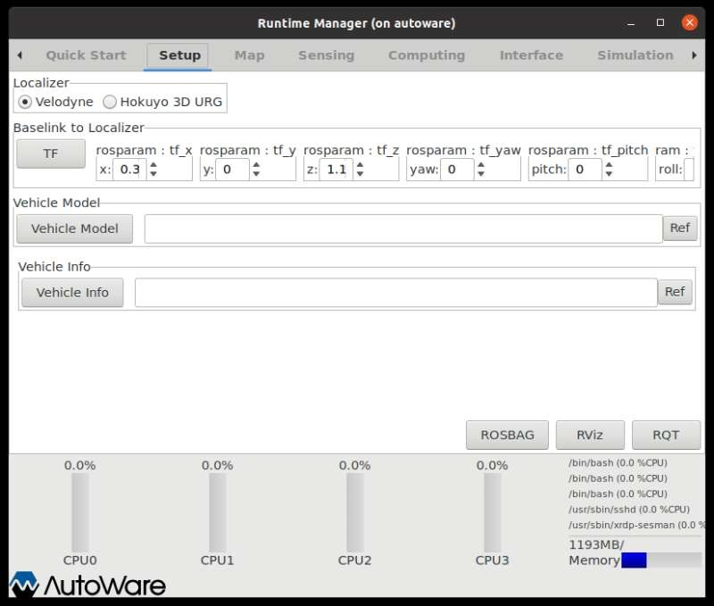

Autoware的简介
Autoware 是世界上第一款开源自动驾驶系统，由名古屋大学教授加藤申平率领的团队开发。2015年，该团队成立了 Tier IV 公司，对 Autoware 进行维护与版本迭代。目前，Autoware 共有 autoware.ai、autoware.auto 和 autoware.universe 三个版本，其中 ai 版本基于 ROS 1.0，后两个版本基于 ROS 2.0。
Autoware的安装步骤
安装Ubuntu 20.04
这一步基本没有问题，不具体说了。不过，需要注意 Ubuntu 18.04 对应的 ROS 版本 Melodic 在2023年5月已结束生命周期，因此选择20.04版本。
安装ROS
- 设置安装源
选择设置来自中科大的安装源1
sudo sh -c '. /etc/lsb-release && echo "deb http://mirrors.ustc.edu.cn/ros/ubuntu/ `lsb_release -cs` main" > /etc/apt/sources.list.d/ros-latest.list'
报错：Synax error: Unerminated quoted string
解决：将dash改为shell
参考：linux下编译报错：gcc: Syntax error: Unterminated quoted string-CSDN博客报错：line 0: unexpeced EOF while looking for matching
"' line 1: syntax error: unexpeced end of file 解决：'lsb_release -cs'需要换成lsb_release -cs`
参考：1.2.4 安装 ROS · Autolabor-ROS机器人入门课程《ROS理论与实践》零基础教程
设置ROS的key
1
sudo apt-key adv --keyserver 'hkp://keyserver.ubuntu.com:80' --recv-key C1CF6E31E6BADE8868B172B4F42ED6FBAB17C654
安装
（1）更新apt1
sudo apt update
（2）安装与Ubuntu版本相对应版本的ROS1
sudo apt install ros-noetic-desktop-full
配置环境变量
1
2echo "source /opt/ros/noetic/setup.bash" >> ~/.bashrc
source ~/.bashrc测试ROS
参考：1.2.6 资料:其他ROS版本安装 · Autolabor-ROS机器人入门课程《ROS理论与实践》零基础教程
安装Docker
- 依次运行以下指令
（1）更新软件列表1
sudo apt-get update
（2）安装依赖1
2
3
4
5
6sudo apt-get install \
apt-transport-https \
ca-certificates \
curl \
gnupg-agent \
software-properties-common
（3）添加 Docker 的官方 GPG 密钥1
curl -fsSL https://download.docker.com/linux/ubuntu/gpg | sudo apt-key add - sudo
（4）根据自己的系统设置一个稳定的仓库1
2
3
4sudo add-apt-repository \
"deb [arch=amd64] https://download.docker.com/linux/ubuntu \
$(lsb_release -cs) \
stable"
（5）再更新一次软件列表1
sudo apt-get update
（6）安装 Docker1
sudo apt-get install docker-ce docker-ce-cli containerd.io
验证 Docker 是否安装成功
1
sudo docker run hello-world
添加当前用户到 Docker 用户组
1
sudo groupadd docker
显示 groupadd: group ‘docker’ already exists
1
sudo gpasswd -a ${USER} docker
显示 Adding user jem to group docker
安装Autoware
准备镜像
从《智能驾驶理论与实践系列丛书 无人系统驾控实践 基于Autoware自动驾驶平台》一书的附件中获取 Autoware 的镜像文件安装 portainer
portainer 是 Docker 的可视化工具
（1）从 Docker Hub 中查找镜像1
docker search porainer|head -n 3
报错：
解决：1
2sudo gpasswd -a jem docker
new grp docker
（2）从 Docker Hub 中下载 portainer-1.24.1 版本的镜像1
docker pull portainer/portainer:1.24.1
（3）创建并运行 portainer 容器1
docker run -d -p 9000:9000 --restart=always -v/var/run/docker.sock:/var/run/docker.sock --name portainer portainer/portainer:1.24.1
（4）打开 portainer.io 界面，对于本机，在浏览器中访问 https://localhost:9000 ，对于其他机器，访问 portainer 所在机器的 IP 地址，例如： 10.194.252.218 。设置密码；选择 Local ，点击 Connect ；即显示 portainer 已经运行
- 导入镜像
（1）点进刚刚创建的容器，在左侧菜单中，点击左侧菜单中的 Images 选项
（2）单击 Import 按钮，进入 “Import image” 界面
（3）单击 Select file 按钮，选择本机中的文件 hqautoware_v0.3_210518.tar，点击 Upload ，出现 Images uploading in progress…
（4）等待镜像文件上传完成
（5）单击 Images 按钮，返回 Image list，可以看到已导入的镜像。记住导入镜像的 Tags：hqautoware/hqautoware:v0.3_210518，后面创建容器时会用到
- 创建容器
（1）单击左侧菜单中的 Containers，进入 Container list ，界面中列出了容器，以及与容器相关的操作，例如 Start、Stop 等
（2）单击 Add container
指定容器名和使用的镜像
- 容器名，即 Name ，约定命名形式为“姓名缩写_下划线_auto_下划线_说明”，在此处命名为 lb_auto_local
- 镜像名，即 Image ，使用之前所导入镜像的 Tags
单击 Manual network port publishing 后的 publish a new nework port，对容器的以下端口进行映射
（3）在 Advanced container settings 的 Command & logging 标签下，做如下修改
| host端口 | container端口 | container端口的协议 | container端口的用途 |
|---|---|---|---|
| 12322 | 22 | TCP | ssh登录 |
| 13389 | 3389 | TCP | 远程桌面 |
| 9090 | 9090 | TCP | LGSVL Simulator 仿真 |
| 11311 | 11311 | TCP | ROS Master 服务端口，可用于分布式调试 |
| 2368 | 2368 | UDP | 镭神激光雷达 |
| 2369 | 2369 | UDP | 镭神激光雷达 |
（4）在 Advanced container settings 的 Volumes 标签下，增加 volume 映射
Entry Point: /tmp/entrypoint.sh
User: root
Console: Interactive & TTY (-i -t)
| container | /tmp/.X11-unix | Bind |
| host | /tmp/.X11-unix | Writable |
| container | /home/jem/.Xauthority | Bind |
| host | /home/jem/.Xauthority | Writable |
| container | /home/autoware/shared_dir | Bind |
| host | /home/jem/shared_dir | Writable |
（5）在 Advanced container settings 的 Network 标签下，
- 设置 Network 为 bridge
- hostname 可以自定义，此处设置为 autoware
（6）在 Advanced container settings 的 Env 标签下，进行如下设置
| name | value |
|---|---|
| XAUTHORITY | /home/jem/.Xauthority |
| DISPLAY | :0 |
| USER_ID | 1000 |
| PATH | /usr/local/sbin:/usr/local/bin:/usr/sbin:/usr/bin:/sbin:/bin |
| LANG | en_US.UTF-8 |
| LC_ALL | C.UTF-8 |
| ROS_DISTRO | noetic |
| USERNAME | autoware |
| PULAE_SERVER | /run/pulse/native |
（7）在 Advanced container settings 的 Runtime & Resources 标签下，Privileged mode 设置为开启状态，使得容器可以访问外围设备
（8）在 Actions 中，单击 Deploy the container ，部署容器
提示 Deployment in progress … ，完成后即可看到 Container list 中出现名为 lb_auto_local 的容器
（9）到此为止，Autoware 容器已创建完毕
（10）创建完成后，如需对容器的部署内容进行修改，可以单击已创建好的 Autoware 容器，进去之后，点击 Duplicate/Edit 按钮，即可基于原先容器的配置进行修改，快速 创建新容器 或 替换原有容器
（11）准备重启容器
- 先把 lb_auto_local Stop 掉，然后 log out 退出登录
- 关掉运行 portainer 的终端（忽略掉提示）
- 重启计算机
- 启动和编译Autoware
（1）在终端中运行1
2docker start lb_auto_local
docker exec -it lb_auto_local /tmp/entrypoint.sh
此时已经进入了 Autoware
（2）第一次使用时，需要编译 Autoware
单独编译 Autoware 中的一个模块，或者完全编译。
首先尝试单独编译其中的底盘驱动程序：1
colcon build --cmake-args -DCMAKE_BUILD_TYPE=Release --paths src/ drivers/awf_drivers/yhs
显示 0 packages finished，原因不详。
再尝试完全编译：1
2
3cd hqautoware/
source install/setup.bash
colcon build --cmake-args -DCMAKE_BUILD_TYPE=Release
部分包出现了警告，最后的编译结果：
（3）运行以下代码，以启动 Autoware 的 “Runtime Manager (于autoware)” 界面：1
roslaunch runtime_manager runtime_manager.launch
- 报错：

原因：不要在新的终端运行，而是直接在原来已经启动了autoware的终端运行
参考：安装autoware.ai遇到的问题 - 知乎 (zhihu.com)
正确运行以后，
a. 终端显示：
b. 此外，出现了另一个终端：
c. 以及 Runtime Manager (on autoware)，共有9个标签页
page_1: Quick Start
page_2: Setup

page_3: Map
page_4: Sensing
page_5: Computing
page_6: Interface
page_7: Simulation
page_8: Topics
page_9: State
至此，完成了 Autoware 的安装。
（4）退出 Autoware：在原来的终端 Ctrl + C 即可
参考
- Home Page - Autoware
- 付明磊，张文安，何军强编. 智能驾驶理论与实践系列丛书 无人系统驾控实践 基于Autoware自动驾驶平台[M]. 2022.10.